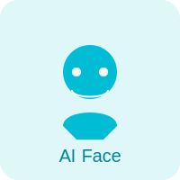

AI 얼굴 인식 기술의 발전과 미래
서론: 얼굴 인식, 기술을 넘어선 일상
불과 몇 년 전만 해도 공상 과학 영화에서나 볼 수 있었던 얼굴 인식 기술은 이제 우리 일상생활 곳곳에 깊숙이 자리 잡았습니다. 스마트폰 잠금 해제부터 공항 출입국 심사, 심지어는 모바일 결제에 이르기까지, AI 기반 얼굴 인식은 편리함과 효율성을 제공하며 우리의 삶을 변화시키고 있습니다. 하지만 이 기술은 어떻게 작동하며, 미래에는 어떤 모습으로 발전할까요?
얼굴 인식 기술의 원리
얼굴 인식 기술의 핵심은 인공지능, 특히 딥러닝(Deep Learning)에 있습니다. 수많은 얼굴 이미지 데이터를 학습하여 각 개인의 고유한 얼굴 특징(눈, 코, 입의 위치, 얼굴 윤곽 등)을 수치화된 '얼굴 특징점(facial landmarks)'으로 추출하고 저장합니다. 이후 새로운 얼굴이 입력되면, 저장된 특징점들과 비교하여 일치 여부를 판단하는 방식입니다. 이 과정은 크게 세 단계로 나눌 수 있습니다.
- 얼굴 감지(Face Detection): 이미지나 영상에서 얼굴의 위치를 찾아냅니다.
- 얼굴 정렬(Face Alignment): 감지된 얼굴을 표준화된 형태로 정렬하여 인식률을 높입니다.
- 얼굴 식별/인증(Face Identification/Verification): 정렬된 얼굴의 특징을 추출하고, 이를 데이터베이스 내의 특징점들과 비교하여 특정 인물을 식별하거나 인증합니다.
주요 응용 분야
얼굴 인식 기술은 다양한 산업 분야에서 혁신적인 변화를 이끌고 있습니다.
- 보안 및 인증: 스마트폰 잠금 해제, 출입 통제 시스템, 공항 자동 출입국 심사 등에서 강력한 보안 솔루션으로 활용됩니다.
- 리테일 및 마케팅: 고객의 연령, 성별, 감정 등을 분석하여 맞춤형 광고를 제공하거나 쇼핑 경험을 개선하는 데 사용될 수 있습니다.
- 의료: 환자 식별, 특정 질병의 조기 진단 보조, 의료 기록 관리 등에 적용될 가능성이 있습니다.
- 엔터테인먼트: 사진 앱의 필터, 가상현실(VR) 및 증강현실(AR) 콘텐츠, 게임 캐릭터 생성 등에 활용됩니다.
미래 전망과 과제
AI 얼굴 인식 기술은 더욱 정교하고 빠르게 발전할 것입니다. 3D 얼굴 인식, 마스크를 착용하거나 환경 변화가 있는 상황에서의 인식률 향상 등 기술적 한계를 극복하려는 노력이 계속되고 있습니다. 특히 엣지 컴퓨팅(Edge Computing)과의 결합으로 기기 자체에서 얼굴 인식이 가능해지면서 처리 속도는 더욱 빨라지고 데이터 보안성도 높아질 전망입니다.
하지만 기술 발전과 함께 개인정보 보호, 사생활 침해, 오용 가능성 등 윤리적, 사회적 문제에 대한 고민 또한 깊어지고 있습니다. 기술의 긍정적인 활용을 극대화하고 부정적인 영향을 최소화하기 위한 사회적 합의와 규제 마련이 시급합니다.
결론
AI 얼굴 인식 기술은 우리의 삶을 더욱 편리하고 풍요롭게 만들 잠재력을 가지고 있습니다. 하지만 그에 따른 책임감 있는 개발과 사용이 무엇보다 중요합니다. Face-to-Face는 이러한 기술을 윤리적인 관점에서 연구하고, 사용자에게 긍정적인 경험을 제공하는 데 기여하고자 노력할 것입니다.